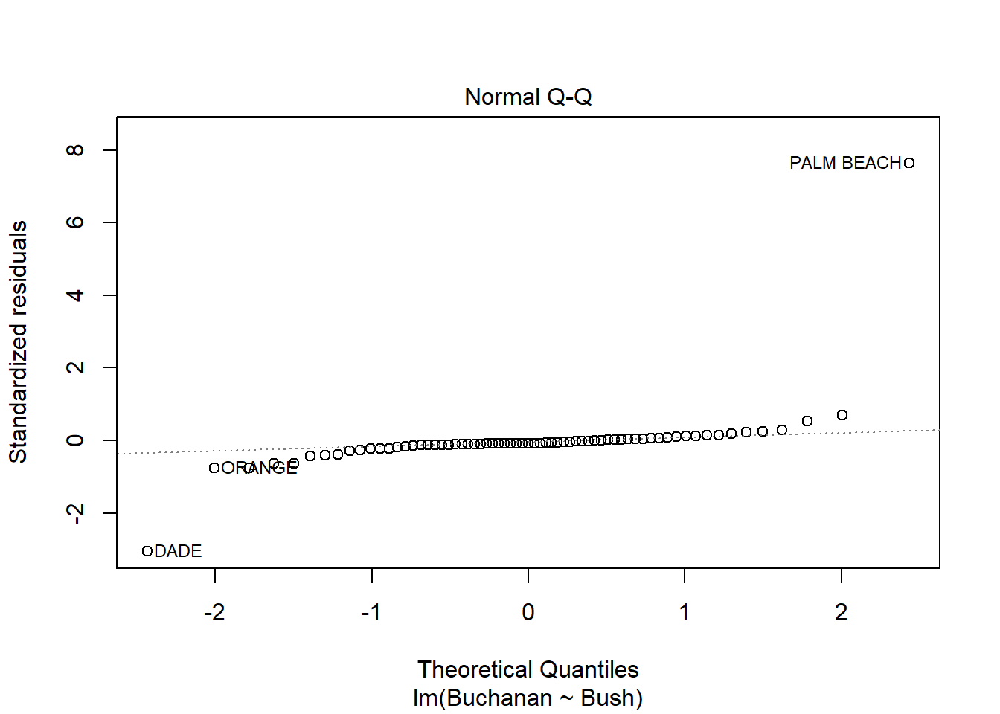
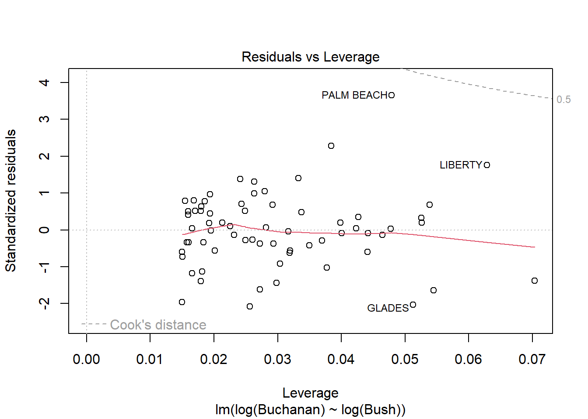

Warning: package 'plyr' was built under R version 4.2.2
------------------------------------------------------------------------------
You have loaded plyr after dplyr - this is likely to cause problems.
If you need functions from both plyr and dplyr, please load plyr first, then dplyr:
library(plyr); library(dplyr)
------------------------------------------------------------------------------
Attaching package: 'plyr'
The following objects are masked from 'package:dplyr':
arrange, count, desc, failwith, id, mutate, rename, summarise,
summarize
The following object is masked from 'package:purrr':
compact
Code
library(alr4)
Warning: package 'alr4' was built under R version 4.2.2
Loading required package: car
Warning: package 'car' was built under R version 4.2.2
Loading required package: carData
Warning: package 'carData' was built under R version 4.2.2
Attaching package: 'car'
The following object is masked from 'package:dplyr':
recode
The following object is masked from 'package:purrr':
some
Loading required package: effects
Warning: package 'effects' was built under R version 4.2.2
lattice theme set by effectsTheme()
See ?effectsTheme for details.
Code
library(smss)
Warning: package 'smss' was built under R version 4.2.2
Question 1
Part A
The first variable to be deleted would be beds because it has the largest p-value.
Part B
The first variable added in forward selection would be size because it has the smallest p-value.
Part C
Beds has such a large p-value despite its correlation with price because it also has strong correlations with other variables. This may cause multicollinearity.
Part D
Code
#test regression modelslibrary(smss)data(house.selling.price.2)full <-lm(P ~ ., data = house.selling.price.2)forw1 <-lm(P ~ S, data = house.selling.price.2)forw2 <-lm(P ~ S + New, data = house.selling.price.2)forw3 <-lm(P ~ S + New + Ba, data = house.selling.price.2)
a.
I used the forward selection method to fit models, adding variables, one at a time, based on t-values (highest to lowest).
\(R^{2}\) is highest for the full model with all variables.
b.
Adjusted \(R^{2}\) is highest for the model of Price as a function of Size, Baths, and New.
The model with Price as a function of Size, Baths, and New has the lowest PRESS calculation.
d.
Code
#calculate AIC valuesAIC(full, k=2)
[1] 790.6225
Code
AIC(forw1, k=2)
[1] 820.1439
Code
AIC(forw2, k=2)
[1] 800.1262
Code
AIC(forw3, k=2)
[1] 789.1366
The model with Price as a function of Size, Baths, and New has the lowest AIC calculation.
e.
Code
#calculate BIC valuesBIC(full)
[1] 805.8181
Code
BIC(forw1)
[1] 827.7417
Code
BIC(forw2)
[1] 810.2566
Code
BIC(forw3)
[1] 801.7996
The model with Price as a function of Size, Baths, and New has the lowest BIC calculation.
Part E
As stated before, Model 1 has better results in four out of the five criteria (Adjusted R-Squared, PRESS, AIC, and BIC). Thus, the model I would prefer overall is Model 1, which omitted the Bed variable. The Bed variable also had an extremely high p-value compared to the other variables, so it would make sense to construct a model without it.
Question 2
Part A
Code
model <-lm(Volume ~ Girth + Height, data = trees)summary(model)
Call:
lm(formula = Volume ~ Girth + Height, data = trees)
Residuals:
Min 1Q Median 3Q Max
-6.4065 -2.6493 -0.2876 2.2003 8.4847
Coefficients:
Estimate Std. Error t value Pr(>|t|)
(Intercept) -57.9877 8.6382 -6.713 2.75e-07 ***
Girth 4.7082 0.2643 17.816 < 2e-16 ***
Height 0.3393 0.1302 2.607 0.0145 *
---
Signif. codes: 0 '***' 0.001 '**' 0.01 '*' 0.05 '.' 0.1 ' ' 1
Residual standard error: 3.882 on 28 degrees of freedom
Multiple R-squared: 0.948, Adjusted R-squared: 0.9442
F-statistic: 255 on 2 and 28 DF, p-value: < 2.2e-16
Part B
Code
plot(model)
There are some regression assumptions that are violated because of the data present in the plots. In the Residuals vs. Fitted plot, the line is not linear, indicating that the variances of the error terms are not equal and there may not be a linear relationship. The Scale-Location plot also shows a non-linear line, indicating that the assumption of constant variance is violated. The other two plots, Normal Q-Q and Residuals vs. Leverage, are normal.
Question 3
Part A
Code
model <-lm(Buchanan ~ Bush, data = florida)plot(model)

Palm Beach is an outlier based on the diagnostic plots for the model because, while all the other data points are fairly close together, the Palm Beach data point is extremely far in each plot. Additionally, in the Residuals vs. Leverage plot, the Palm Beach point is outside of Cook’s distance, meaning it is an outlier with extreme influence on the data.
Part B
Code
model <-lm(log(Buchanan) ~log(Bush), data = florida)plot(model)

The findings do change somewhat because in the new model using logs, the Palm Beach data point is now inside Cook’s distance, meaning it has less influence over the data and is less of an outlier. The distance between Palm Beach and the other data points has been reduced, but it still seems to remain somewhat of an outlier but much less than in the previous model.
Source Code
---title: "Home Work 5"author: "Megha Joseph"desription: "Home Work5"date: "12/11/2022"format: html: toc: true code-fold: true code-copy: true code-tools: truecategory: HW5---```{r}# Setuplibrary(tidyverse)library(plyr)library(alr4)library(smss)```## Question 1### Part AThe first variable to be deleted would be beds because it has the largest p-value.### Part BThe first variable added in forward selection would be size because it has the smallest p-value.### Part CBeds has such a large p-value despite its correlation with price because it also has strong correlations with other variables. This may cause multicollinearity.### Part D```{r}#test regression modelslibrary(smss)data(house.selling.price.2)full <-lm(P ~ ., data = house.selling.price.2)forw1 <-lm(P ~ S, data = house.selling.price.2)forw2 <-lm(P ~ S + New, data = house.selling.price.2)forw3 <-lm(P ~ S + New + Ba, data = house.selling.price.2)```### a.I used the forward selection method to fit models, adding variables, one at a time, based on t-values (highest to lowest).$R^{2}$ is highest for the full model with all variables.### b.Adjusted $R^{2}$ is highest for the model of *Price* as a function of *Size*, *Baths*, and *New*.### c.```{r}#calculate PRESS statisticsPRESS <-function(linear.model) { pr <-residuals(linear.model)/(1-lm.influence(linear.model)$hat) PRESS <-sum(pr^2) return(PRESS)}PRESS(full)PRESS(forw1)PRESS(forw2)PRESS(forw3)```The model with *Price* as a function of *Size*, *Baths*, and *New* has the lowest PRESS calculation.### d.```{r}#calculate AIC valuesAIC(full, k=2)AIC(forw1, k=2)AIC(forw2, k=2)AIC(forw3, k=2)```The model with *Price* as a function of *Size*, *Baths*, and *New* has the lowest AIC calculation.### e.```{r}#calculate BIC valuesBIC(full)BIC(forw1)BIC(forw2)BIC(forw3)```The model with *Price* as a function of *Size*, *Baths*, and *New* has the lowest BIC calculation.### Part EAs stated before, Model 1 has better results in four out of the five criteria (Adjusted R-Squared, PRESS, AIC, and BIC). Thus, the model I would prefer overall is Model 1, which omitted the Bed variable. The Bed variable also had an extremely high p-value compared to the other variables, so it would make sense to construct a model without it.## Question 2### Part A```{r}model <-lm(Volume ~ Girth + Height, data = trees)summary(model)```### Part B```{r}plot(model)```There are some regression assumptions that are violated because of the data present in the plots. In the Residuals vs. Fitted plot, the line is not linear, indicating that the variances of the error terms are not equal and there may not be a linear relationship. The Scale-Location plot also shows a non-linear line, indicating that the assumption of constant variance is violated. The other two plots, Normal Q-Q and Residuals vs. Leverage, are normal.## Question 3### Part A```{r}model <-lm(Buchanan ~ Bush, data = florida)plot(model)```Palm Beach is an outlier based on the diagnostic plots for the model because, while all the other data points are fairly close together, the Palm Beach data point is extremely far in each plot. Additionally, in the Residuals vs. Leverage plot, the Palm Beach point is outside of Cook's distance, meaning it is an outlier with extreme influence on the data.### Part B```{r}model <-lm(log(Buchanan) ~log(Bush), data = florida)plot(model)```The findings do change somewhat because in the new model using logs, the Palm Beach data point is now inside Cook's distance, meaning it has less influence over the data and is less of an outlier. The distance between Palm Beach and the other data points has been reduced, but it still seems to remain somewhat of an outlier but much less than in the previous model.